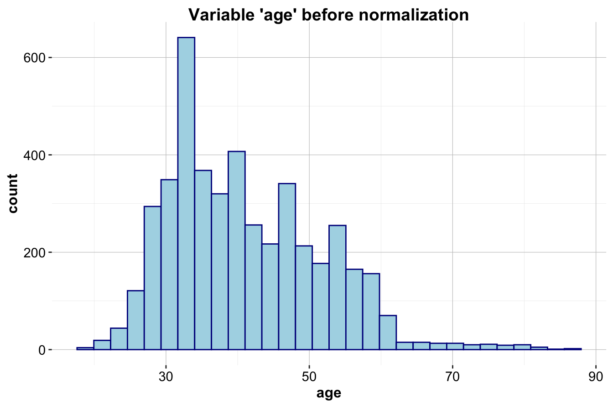
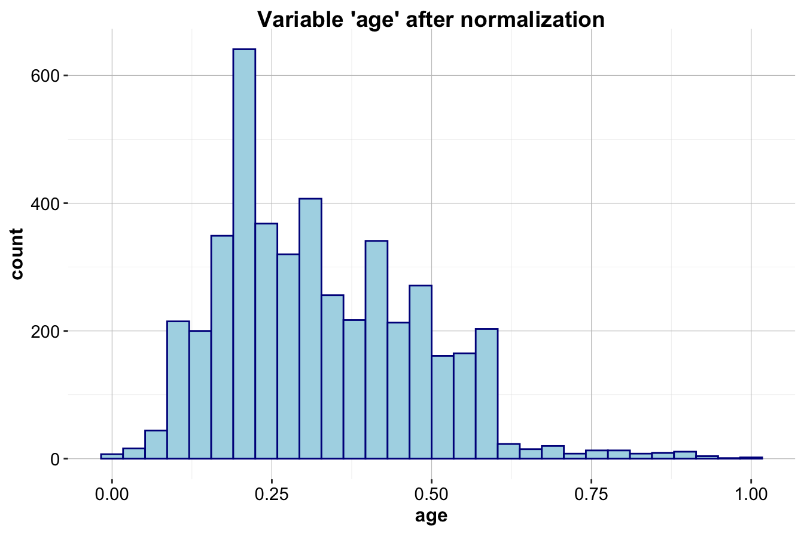

12 Neural Networks: The Building Blocks of Artificial Intelligence
For centuries, humans have dreamed of creating machines capable of mimicking human intelligence. Philosophers, scientists, and storytellers have long grappled with the possibilities and consequences of such creations, weaving them into myths, fiction, and philosophical discourse. The roots of this fascination can be traced as far back as ancient Greece, where inventors like Daedalus and Hero of Alexandria were said to have constructed mechanical devices that could write, generate sounds, and even play music. Today, in the 21st century, these age-old dreams are no longer confined to the realm of imagination. They have become reality in the form of Artificial Intelligence (AI), a transformative force now deeply integrated into our daily lives. From ChatGPT and generative AI (GenAI) to self-driving cars and digital assistants like Siri or Alexa, AI has revolutionized the way we work, interact, and make decisions. This unprecedented progress has been driven by advancements in computational power, the availability of vast datasets, and breakthroughs in algorithm design.
At the heart of many cutting-edge AI systems lies a class of algorithms known as neural networks. Over the past decade, neural networks have undergone a dramatic resurgence under the umbrella of deep learning, ushering in revolutionary advancements across diverse fields like computer vision, natural language processing, and generative modeling. While deep learning now represents the forefront of machine learning, its foundation rests on simpler neural network architectures. In this chapter, we focus on feed-forward neural networks, also known as multilayer perceptrons (MLPs). These foundational models form the building blocks for more sophisticated deep learning systems.
Neural networks are computational models inspired by the human brain. Just as the brain is composed of billions of interconnected neurons that work together to enable complex tasks like reasoning, learning, and perception, artificial neural networks replicate this structure using layers of interconnected nodes (artificial neurons). This architecture allows neural networks to process and learn from data by identifying patterns, making them uniquely suited for solving problems that involve complex, high-dimensional, and unstructured data—such as images, text, and sound. Unlike traditional machine learning models like Decision Trees or k-Nearest Neighbors, neural networks excel in their ability to automatically discover features and representations within the data, often surpassing human-engineered solutions.
Why Neural Networks Are Powerful
Neural networks are particularly adept at solving complex and nonlinear problems, making them indispensable for tasks that involve large, diverse, and intricate datasets. Their unique design and capabilities provide several key advantages:
-
Pattern Recognition in Complex Data: Neural networks shine when it comes to detecting patterns in unstructured data, such as recognizing objects in images, understanding spoken language, or generating coherent text. These are tasks where traditional algorithms struggle.
-
Robustness to Noise: Thanks to their dense networks of neurons and adaptable weights, neural networks can identify meaningful patterns even in noisy or incomplete datasets, effectively filtering out irrelevant or erroneous data.
- Scalability: Neural networks can handle vast amounts of data and adapt to increasing complexity by adding layers and nodes, enabling them to model highly nonlinear relationships and solve challenging problems.
Despite their strengths, neural networks are not without challenges. Unlike interpretable models such as decision trees, neural networks are often referred to as “black boxes” due to their distributed and opaque decision-making processes. It can be difficult to understand why a neural network makes a specific prediction, as the reasoning is embedded across countless weights and activations. Additionally, training neural networks can be computationally intensive, often requiring specialized hardware like GPUs or TPUs to handle the enormous volume of calculations efficiently.
The power of neural networks lies in their biological inspiration. Just as interconnected neurons in the brain collaborate to perform complex tasks, artificial neurons in a network combine their outputs to solve problems that simpler algorithms cannot. This ability to emulate the nonlinear, adaptive learning of the brain has positioned neural networks at the forefront of both academic research and industry applications.
What’s Ahead
In this chapter, we will explore the key concepts behind neural networks and examine their transformative applications through the following topics:
-
Biological Inspiration: Understanding how the structure and function of the human brain inspired artificial neural networks.
-
Core Algorithmic Principles: Exploring the foundational mechanics of neural networks, including layers, nodes, and weights.
-
Activation Functions: Unpacking the importance of introducing non-linearity to enable neural networks to model complex patterns.
-
Training Neural Networks: Learning how neural networks adjust their parameters through iterative optimization to minimize errors.
- Case Study: Applying neural networks to solve a real-world problem—predicting whether a customer will subscribe to a term deposit using the bank marketing dataset.
Neural networks represent a paradigm shift in modern computing, enabling machines to tackle problems that were once considered insurmountable. From powering recommendation systems to driving autonomous vehicles, these models are transforming industries and shaping the future of AI. In this chapter, we will uncover the fundamentals of neural networks, demonstrating their extraordinary capabilities and laying the groundwork for understanding how they operate. Let’s begin by exploring the inspiration behind neural networks and their connection to the biology of the human brain.
12.1 Neural Networks: Inspired by Biological Neurons
The foundation of neural networks is deeply rooted in the structure and function of biological neurons, which form the basis of learning and decision-making in animal brains. While individual neurons are relatively simple in structure, their true power lies in their dense and intricate connectivity. These networks of interconnected neurons enable the brain to perform highly complex tasks, such as pattern recognition, classification, reasoning, and decision-making. For example, the human brain contains approximately \(10^{11}\) neurons, with each neuron forming connections to an average of 10,000 others. This creates an astonishing \(10^{15}\) synaptic connections—a vast, dynamic network capable of extraordinary learning and adaptation.
Artificial Neural Networks (ANNs) are computational abstractions of this biological system. While they are far simpler than their biological counterparts, ANNs replicate the fundamental principle of learning through interconnected units. By leveraging dense networks of artificial neurons, ANNs can model nonlinear and dynamic processes, enabling them to tackle complex problems in domains such as image recognition, speech processing, and decision-making. They are particularly adept at uncovering patterns and relationships in data, even in cases where traditional algorithms struggle.
As shown in Figure 12.1, a biological neuron is designed to process and transmit information. Dendrites act as the input channels, collecting signals from other neurons. These signals are processed and integrated in the cell body, where a decision is made: if the combined input surpasses a certain threshold, the neuron “fires” and sends an output signal through its axon to other connected neurons. This nonlinear behavior—firing only when a certain input threshold is exceeded—plays a critical role in the brain’s ability to process information efficiently.
Similarly, an artificial neuron (illustrated in Figure 12.2) emulates this process using a mathematical model. It receives inputs (\(x_i\)) from either other artificial neurons or directly from a dataset. These inputs are combined using a weighted summation (\(\sum w_i x_i\)), where the weights (\(w_i\)) represent the strength of each input’s influence. The combined signal is then passed through an activation function (\(f(.)\)) to introduce non-linearity, determining the final output (\(\hat{y}\)). This output is then either passed downstream to other artificial neurons or used as the final result of the model. The activation function is crucial, as it enables neural networks to learn and model complex, nonlinear relationships in data.
Figure 12.1: Visualization of a biological neuron, which processes input signals through dendrites and sends outputs through the axon.
Figure 12.2: Illustration of an artificial neuron, designed to emulate the structure and function of a biological neuron in a simplified way.
One of the key advantages of artificial neural networks is their robustness. Unlike traditional algorithms, neural networks can handle noisy or incomplete data effectively. This is because the network’s many interconnected neurons and weighted connections allow it to adapt and “learn around” noise, focusing on the underlying patterns. However, this flexibility comes at a cost. Neural networks often require large amounts of data and computational power to train effectively, and their decision-making process is less interpretable than traditional models like decision trees.
In the following sections, we will delve deeper into the mechanics of neural networks, starting with their core structure and the algorithms that enable them to learn from data.
12.2 How Neural Networks Work
Neural networks can be understood as an extension of linear models that incorporate multiple layers of processing to produce predictions or decisions. At their core, they build upon the fundamental concepts of linear regression. Recall that a linear regression model makes predictions using the following equation:
\[ \hat{y} = b_0 + b_1 x_1 + b_2 x_2 + \dots + b_p x_p \] where \(p\) represents the number of predictors, \(b_0\) is the intercept, and \(b_1\) to \(b_p\) are the learned coefficients. In this setup, \(\hat{y}\) is a weighted sum of the input features (\(x_1\) to \(x_p\)), where the weights (\(b_1\) to \(b_p\)) determine the relative influence of each feature on the prediction. This simple linear relationship can be visualized as shown in Figure 12.3, where the input features and the prediction are represented as nodes, and the coefficients are visualized as the connecting weights.
Figure 12.3: A graphical representation of a regression model: input features and predictions are shown as nodes, with the coefficients represented as connections between the nodes.
In Figure 12.3, the nodes on the left represent the input features, the lines connecting them represent the coefficients (\(w_i\)), and the single node on the right represents the output (\(\hat{y}\)), which is the weighted sum of the inputs. A neural network generalizes this idea by introducing additional layers of nodes between the input and output, allowing the model to capture complex, nonlinear patterns in the data. This structure is illustrated in Figure 12.4.
The structure of a neural network includes the following key components:
-
Input Layer: The input layer is the entry point for the data. Each node in this layer corresponds to an input feature (e.g., age, income, or image pixels).
-
Hidden Layers: These are the intermediate layers that process the data and extract patterns. Each hidden layer contains multiple nodes (artificial neurons), and each node is connected to every node in the preceding and succeeding layers. The nodes in hidden layers perform mathematical transformations on the data, enabling the network to learn complex relationships.
- Output Layer: The final layer produces the model’s prediction. For example, in a classification task, the output might be the predicted probability of a specific class, while in regression tasks, it might be a continuous numerical value.
Figure 12.4: Visualization of a multilayer neural network model with two hidden layers.
In Figure 12.4, the input layer passes the features into the network, where each hidden layer transforms the information and passes it to the next layer. The output layer aggregates all this information to generate the final prediction. Every connection in the network has an associated weight (\(w_i\)), which determines the strength of the relationship between two nodes. These weights are adjusted during training to optimize the model’s accuracy.
The behavior of an artificial neuron can be mathematically expressed as:
\[ \hat{y} = f\left( \sum_{i=1}^{p} w_i x_i + b \right) \]
Here:
- \(x_i\) represents the input features,
- \(w_i\) represents the corresponding weights,
- \(b\) is a bias term that helps shift the activation threshold,
- \(\sum\) represents the summation of the weighted inputs,
- \(f(.)\) is the activation function, and
- \(\hat{y}\) is the output of the neuron.
The activation function plays a vital role in introducing non-linearity to the model. Without it, the neural network would simply be a linear model, regardless of its complexity or the number of layers. By applying a non-linear transformation to the combined input signals, activation functions enable neural networks to approximate highly complex patterns in data.
Key Characteristics of Neural Networks
Despite the diversity of neural network architectures, all neural networks share three key characteristics that define their functionality (see Figure 12.2):
Activation Functions:
The activation function transforms a neuron’s net input into an output signal that is passed to the next layer. Activation functions introduce non-linearity, which is critical for modeling complex relationships in data. Examples include the sigmoid function, ReLU (Rectified Linear Unit), and hyperbolic tangent (tanh).Network Architecture:
The architecture defines the overall structure of the neural network, including the number of layers, the number of nodes in each layer, and the way the nodes are connected. For instance, a deep neural network has many hidden layers, enabling it to learn hierarchical and abstract representations from data.Training Algorithm:
Training a neural network involves adjusting the weights (\(w_i\)) and biases (\(b\)) in the model to minimize the error between the predicted and actual outputs. This is achieved through iterative optimization algorithms such as gradient descent, which uses the gradient of a loss function to update the weights.
In the following sections, we’ll explore these components in greater detail, starting with activation functions and their role in enabling neural networks to learn complex, non-linear patterns.
12.3 Activation Functions
The activation function is a critical component of a neural network, defining how an artificial neuron processes incoming signals and passes information through the network. Much like its biological counterpart, an artificial neuron aggregates its input signals, applies a transformation, and determines the output signal to send forward. In biological neurons, this transformation is akin to summing input signals from dendrites and deciding whether the neuron “fires” based on whether the cumulative signal exceeds a certain threshold.
In artificial neurons, this process is implemented mathematically. The activation function determines whether, and to what extent, a neuron “activates” in response to the inputs. Early models of neural networks often used the threshold activation function, which mirrors this biological concept. The threshold function activates only when the input signal surpasses a certain threshold value. Mathematically, it is defined as:
\[ f(x) = \begin{cases} 1 & \text{if } x \geq 0 \\ 0 & \text{if } x < 0 \end{cases} \]
Figure 12.5 visualizes the threshold activation function. Here, the neuron outputs a value of 1 when the input is at least zero, and 0 otherwise. Due to its step-like shape, it is sometimes referred to as a unit step function.
Figure 12.5: Visualization of the threshold activation function (unit step).
While biologically intuitive, the threshold activation function is rarely used in modern neural networks because it cannot handle nuanced relationships between input and output. It is too rigid, providing only binary outputs (0 or 1), and is not differentiable, which prevents its use in optimization algorithms like gradient descent.
The Sigmoid Activation Function
A widely used alternative is the sigmoid activation function, also known as the logistic sigmoid. The sigmoid function provides a smoother, non-binary output that maps any input to a value between 0 and 1. It is defined mathematically as:
\[ f(x) = \frac{1}{1 + e^{-x}} \]
Here, \(e\) is the base of the natural logarithm (approximately 2.72). The sigmoid function has an “S-shaped” curve, as shown in Figure 12.6, which makes it particularly useful for modeling probabilities and continuous values. Unlike the threshold function, the sigmoid is differentiable, which makes it compatible with modern training algorithms.
Figure 12.6: Visualization of the sigmoid activation function.
The sigmoid function is effective in producing smooth outputs but has certain limitations. For example, it suffers from the vanishing gradient problem, where very large or very small input values cause the gradient to approach zero, slowing down the learning process.
Other Common Activation Functions
In addition to the sigmoid function, several other activation functions are commonly used, depending on the specific needs of the task. Figure 12.7 provides an overview of three widely used activation functions:
-
Hyperbolic Tangent (tanh): Similar to the sigmoid function but with an output range of \((-1, 1)\). This symmetry around zero often leads to faster learning in practice.
-
Gaussian: Produces a bell-shaped curve centered at zero. It is less common but useful for specific applications like radial basis function networks.
- Linear Activation: Outputs the input as is, often used in the final layer for regression tasks.

Figure 12.7: Comparison of common activation functions: Sigmoid, tanh, and Gaussian.
Choosing the Right Activation Function
The choice of an activation function significantly impacts the performance and behavior of a neural network:
-
Sigmoid is commonly used in the output layer for binary classification problems, where the output represents a probability.
-
Tanh is often used in hidden layers as it is zero-centered, leading to faster convergence in optimization.
-
ReLU (Rectified Linear Unit): While not discussed above, ReLU is one of the most popular activation functions in modern neural networks. It outputs \(f(x) = \max(0, x)\), which helps address the vanishing gradient problem and accelerates training.
- Gaussian and linear functions are more specialized and are chosen for specific tasks, such as regression or radial basis function networks.
Activation functions like sigmoid and tanh compress input values into a narrow output range (e.g., 0 to 1 for sigmoid, or \(-1\) to \(1\) for tanh). This compression leads to the saturation problem, where input values far from zero produce near-constant outputs. For instance:
- Sigmoid outputs are very close to 0 for inputs below \(-5\) and very close to 1 for inputs above \(+5\).
- This results in gradients near zero, slowing learning (the vanishing gradient problem).
One solution to this issue is to preprocess data by normalizing or standardizing input features so they fall within a small range centered around zero. This ensures that most inputs are in the sensitive (non-saturated) range of the activation function, leading to faster convergence and better learning.
12.4 Network Architecture
The capacity of a neural network to learn and make predictions is deeply tied to its architecture, or topology. This refers to the arrangement of neurons and the connections between them, which define how data flows through the network. While neural networks can take on countless forms, their architecture is primarily characterized by three elements:
- The number of layers in the network,
- The number of neurons (or nodes) in each layer, and
- The connections between neurons across layers.
The architecture of a neural network determines its ability to model complexity. Larger networks with more layers and neurons can capture more intricate patterns and decision boundaries. However, the power of a network is not just a matter of size but also how its components are organized and interconnected.
To understand network architecture, let us consider a simple example illustrated in Figure 12.3. This basic network consists of:
-
Input nodes, which receive the raw feature values from the dataset. Each input node corresponds to one feature and passes its value to the network.
- Output nodes, which provide the network’s final prediction (denoted as \(p\)).
In this single-layer network, input nodes are connected directly to the output node through a set of weights (\(w_1, w_2, \dots, w_p\)), representing the influence of each input feature on the prediction. This simple architecture works well for basic classification or regression tasks but struggles with more complex patterns.
To handle more sophisticated tasks, we can add hidden layers, as shown in Figure 12.4. These intermediate layers introduce additional processing steps, enabling the network to model nonlinear relationships and discover more complex patterns in the data.
A multilayer network typically consists of three types of layers:
- The input layer, where raw features enter the network,
- One or more hidden layers, which extract and refine patterns, and
- The output layer, which combines the processed information to generate the network’s final prediction.
In a fully connected network, every neuron in one layer is connected to every neuron in the next layer, with each connection assigned a weight. These weights determine how much influence one neuron has on another, and they are adjusted during training to optimize the network’s performance.
The addition of hidden layers allows the network to process input data hierarchically. Early layers may learn basic features, such as edges in an image or simple word patterns in text, while deeper layers capture more abstract representations, such as shapes or semantic meaning. When a network contains multiple hidden layers, it is referred to as a deep neural network (DNN). The practice of training such networks is known as deep learning, and it has enabled breakthroughs in fields such as computer vision, speech recognition, and natural language processing.
The number of input and output nodes in a network is determined by the problem:
- The input nodes match the number of features in the dataset. For example, a dataset with 20 features would have 20 input nodes.
- The output nodes depend on the task. For regression, there is typically one output node for the predicted value. For classification, the number of output nodes corresponds to the number of classes.
The number of hidden nodes in each layer is not predefined and must be decided by the user. A larger number of hidden nodes increases the network’s capacity to learn complex patterns, but it also increases the risk of overfitting—a situation where the model performs well on the training data but poorly on unseen data. Overly large networks can also be computationally expensive and slow to train.
While a more complex network may appear to be more powerful, it is crucial to strike a balance between complexity and simplicity. This is often guided by the principle of Occam’s Razor, which suggests that the simplest model that adequately explains the data is usually the best choice. The optimal network architecture often requires trial and error, combined with domain knowledge and validation techniques to evaluate performance on unseen data.
In summary, the architecture of a neural network defines its capacity to solve problems. From the simple single-layer network to sophisticated deep neural networks, these architectures offer flexibility to model a wide variety of tasks, ranging from basic regression to highly complex problems like image recognition and text generation. As we move forward, we will explore how these architectures are trained to optimize their performance and learn from data.
12.5 How Neural Networks Learn
A neural network begins as an untrained structure—a blank slate. Similar to a newborn child learning through experience, a neural network must be trained with data to adjust its internal connections. These connections, represented as weights, are strengthened or weakened as the network processes data, enabling it to learn patterns and relationships over time. Just as a baby’s brain develops by interacting with its environment, a neural network refines itself by iteratively improving its predictions based on the data it encounters.
Training a neural network involves a computationally intensive process of adjusting the weights that connect the neurons. While neural networks had been studied since the mid-20th century, they remained impractical for real-world applications until the 1980s, when a major breakthrough—the backpropagation algorithm—made it feasible to train multilayer networks efficiently. Backpropagation, a technique for “back-propagating” errors through the network, revolutionized neural networks by enabling them to learn complex tasks. Despite being computationally expensive relative to simpler algorithms, backpropagation has become a cornerstone of modern neural network training, powering applications from computer vision to natural language processing.
At its core, backpropagation works by iteratively refining the network’s weights through a process that cycles between two phases: the forward phase and the backward phase. Each cycle, referred to as an epoch, begins with random initialization of the weights, as the network starts with no prior knowledge. Over successive epochs, the network learns by adjusting the weights to minimize prediction errors.
In the forward phase, input data is passed through the network, layer by layer, starting at the input layer and propagating through any hidden layers before reaching the output layer. Each neuron processes its input by applying its weights, summing the weighted inputs, and transforming the result using an activation function. The output layer produces the network’s prediction, which is then compared to the actual target value from the training data. This comparison generates an error signal—a measure of how far off the network’s prediction was.
In the backward phase, this error signal is propagated backward through the network to update the weights. The goal is to adjust the weights in such a way that the network produces predictions closer to the true target values in subsequent forward passes. This is achieved using a technique called gradient descent, which determines the optimal direction and magnitude of weight changes to minimize the error. Gradient descent relies on the derivative of the activation function to compute the gradient of the error with respect to each weight. This gradient indicates how steeply the error changes for a small adjustment in the weight, providing a “slope” to guide the weight updates. The process is akin to finding the fastest route downhill in a mountainous terrain: by always stepping in the direction of the steepest descent, the network gradually approaches the point of minimum error.
The size of each weight adjustment is controlled by a parameter called the learning rate. A high learning rate allows the network to make large, rapid updates to the weights, potentially speeding up training but risking overshooting the optimal solution. Conversely, a low learning rate ensures more precise updates but may result in slower convergence. Striking the right balance for the learning rate is crucial for effective training.
To successfully apply gradient descent and backpropagation, the network’s activation functions must be differentiable. This requirement is why smooth, non-linear activation functions such as the sigmoid, hyperbolic tangent, and ReLU (Rectified Linear Unit) are widely used. Their differentiable nature enables the network to compute gradients efficiently, allowing the algorithm to make meaningful updates to the weights.
Through repeated cycles of forward and backward propagation, the network refines its weights, reducing the overall error and improving its ability to generalize to unseen data. While the training process may sound complex, modern machine learning libraries like TensorFlow and PyTorch automate the implementation of backpropagation, gradient descent, and weight updates. These tools simplify the process, enabling practitioners to focus on designing the network architecture and preparing the data.
The development of the backpropagation algorithm marked a turning point for neural networks, enabling them to tackle real-world problems with impressive accuracy. Although training remains computationally demanding, advancements in hardware—such as GPUs and TPUs—have made it practical to train even large, complex networks. This progress has driven breakthroughs in fields such as speech recognition, image classification, and predictive modeling.
Now that we have a foundation in how neural networks are trained, we will explore their application to real-world scenarios, demonstrating how they can extract meaningful patterns from data to make predictions.
12.6 Case Study: Bank Marketing
The bank marketing dataset contains information about customers contacted by a Portuguese banking institution to subscribe to a term deposit. The primary objective is to predict whether a customer will subscribe to the term deposit based on the available features. This analysis not only helps identify the profiles of likely subscribers but also provides insights for improving future marketing campaigns.
Business Context
Banks often rely on two approaches to promote their products:
-
Mass Campaigns: Targeting the general public indiscriminately, typically resulting in low response rates (e.g., <1%).
- Directed Marketing: Focusing on specific, likely customers, which improves effectiveness but raises concerns about privacy intrusion.
In this case, the goal is to refine the effectiveness of directed marketing campaigns by analyzing patterns in past campaign data. By identifying which customers are more likely to subscribe, the bank can reduce costs, minimize intrusive communications, and maintain success rates.
A term deposit is a savings product with a fixed interest rate over a specified period. Customers benefit from better interest rates compared to regular savings accounts, and banks use term deposits to increase their financial assets. More about term deposits can be found here.
Overview of the Dataset
The dataset, sourced from this repository, includes information on direct phone-based marketing campaigns. Some customers were contacted multiple times during the same campaign. The goal is to classify whether a customer subscribed to a term deposit (deposit = "yes" or "no").
We load and inspect the dataset:
data(bank) # Load the bank marketing dataset
str(bank)
'data.frame': 4521 obs. of 17 variables:
$ age : int 30 33 35 30 59 35 36 39 41 43 ...
$ job : Factor w/ 12 levels "admin.","blue-collar",..: 11 8 5 5 2 5 7 10 3 8 ...
$ marital : Factor w/ 3 levels "divorced","married",..: 2 2 3 2 2 3 2 2 2 2 ...
$ education: Factor w/ 4 levels "primary","secondary",..: 1 2 3 3 2 3 3 2 3 1 ...
$ default : Factor w/ 2 levels "no","yes": 1 1 1 1 1 1 1 1 1 1 ...
$ balance : int 1787 4789 1350 1476 0 747 307 147 221 -88 ...
$ housing : Factor w/ 2 levels "no","yes": 1 2 2 2 2 1 2 2 2 2 ...
$ loan : Factor w/ 2 levels "no","yes": 1 2 1 2 1 1 1 1 1 2 ...
$ contact : Factor w/ 3 levels "cellular","telephone",..: 1 1 1 3 3 1 1 1 3 1 ...
$ day : int 19 11 16 3 5 23 14 6 14 17 ...
$ month : Factor w/ 12 levels "apr","aug","dec",..: 11 9 1 7 9 4 9 9 9 1 ...
$ duration : int 79 220 185 199 226 141 341 151 57 313 ...
$ campaign : int 1 1 1 4 1 2 1 2 2 1 ...
$ pdays : int -1 339 330 -1 -1 176 330 -1 -1 147 ...
$ previous : int 0 4 1 0 0 3 2 0 0 2 ...
$ poutcome : Factor w/ 4 levels "failure","other",..: 4 1 1 4 4 1 2 4 4 1 ...
$ deposit : Factor w/ 2 levels "no","yes": 1 1 1 1 1 1 1 1 1 1 ...The dataset contains 4521 observations and 17 variables. It includes 16 predictors and one target variable (deposit). Below is a summary of the key variables:
Demographic Features:
- age: Age of the customer (numeric).
- job: Type of job (e.g., “admin.”, “blue-collar”, “management”).
- marital: Marital status (e.g., “married”, “single”).
- education: Level of education (e.g., “secondary”, “tertiary”).
- default: Whether the customer has credit in default (binary: “yes”, “no”).
- balance: Average yearly balance in euros (numeric).
Loan Information:
- housing: Whether the customer has a housing loan (binary).
- loan: Whether the customer has a personal loan (binary).
Campaign Details:
- contact: Type of communication (e.g., “telephone”, “cellular”).
- duration: Last contact duration in seconds (numeric).
- campaign: Number of contacts performed during this campaign (numeric).
- pdays: Days since the customer was last contacted (numeric).
- previous: Number of contacts before the current campaign (numeric).
- poutcome: Outcome of the previous campaign (e.g., “success”, “failure”).
Target Variable:
- deposit: Indicates whether the customer subscribed to a term deposit (binary: “yes”, “no”).
Data Cleaning and Preparation
To prepare the dataset for the Neural Network algorithm, all variables must be scaled to a range between 0 and 1. We apply min-max normalization using the minmax() function from the liver package:
bank_mm = minmax(bank, col = "all")
str(bank_mm)
'data.frame': 4521 obs. of 17 variables:
$ age : num 0.162 0.206 0.235 0.162 0.588 ...
$ job : num 0.9091 0.6364 0.3636 0.3636 0.0909 ...
$ marital : num 0.5 0.5 1 0.5 0.5 1 0.5 0.5 0.5 0.5 ...
$ education: num 0 0.333 0.667 0.667 0.333 ...
$ default : num 0 0 0 0 0 0 0 0 0 0 ...
$ balance : num 0.0685 0.1088 0.0626 0.0643 0.0445 ...
$ housing : num 0 1 1 1 1 0 1 1 1 1 ...
$ loan : num 0 1 0 1 0 0 0 0 0 1 ...
$ contact : num 0 0 0 1 1 0 0 0 1 0 ...
$ day : num 0.6 0.3333 0.5 0.0667 0.1333 ...
$ month : num 0.909 0.727 0 0.545 0.727 ...
$ duration : num 0.0248 0.0715 0.0599 0.0645 0.0735 ...
$ campaign : num 0 0 0 0.0612 0 ...
$ pdays : num 0 0.39 0.38 0 0 ...
$ previous : num 0 0.16 0.04 0 0 0.12 0.08 0 0 0.08 ...
$ poutcome : num 1 0 0 1 1 ...
$ deposit : num 0 0 0 0 0 0 0 0 0 0 ...Before and after applying min-max normalization, we can compare the distribution of age as an example:
ggplot(data = bank) +
geom_histogram(mapping = aes(x = age), colour = "darkblue", fill = "lightblue") +
ggtitle("Variable 'age' before normalization")
ggplot(data = bank_mm) +
geom_histogram(mapping = aes(x = age), colour = "darkblue", fill = "lightblue") +
ggtitle("Variable 'age' after normalization")
Next, we partition the dataset into training (80%) and test (20%) subsets using the partition() function:
set.seed(500)
data_sets = partition(data = bank_mm, ratio = c(0.8, 0.2))
train_set = data_sets$part1
test_set = data_sets$part2
actual_test = test_set$depositTo validate this split, we compare the proportion of deposit = "yes" in the training and test sets using a two-sample Z-test:
x1 = sum(train_set$deposit == 1)
x2 = sum(test_set$deposit == 1)
n1 = nrow(train_set)
n2 = nrow(test_set)
prop.test(x = c(x1, x2), n = c(n1, n2))
2-sample test for equality of proportions with continuity correction
data: c(x1, x2) out of c(n1, n2)
X-squared = 0.0014152, df = 1, p-value = 0.97
alternative hypothesis: two.sided
95 percent confidence interval:
-0.02516048 0.02288448
sample estimates:
prop 1 prop 2
0.1150124 0.1161504The test confirms that the proportions in both subsets are statistically similar (p-value > 0.05), validating our split.
Here’s the improved version of your subsection:
Applying the Neural Network Algorithm
Our objective is to classify customers as either likely (deposit = "yes") or unlikely (deposit = "no") to subscribe to a term deposit, based on the following predictors:
age, default, balance, housing, loan, duration, campaign, pdays, and previous.
To implement a neural network, we use the neuralnet package in R. This package offers a straightforward and flexible way to build neural networks and provides functionality for visualizing the network topology. While neuralnet is a great learning tool, it is also powerful enough for practical applications.
If you haven’t already installed the neuralnet package, you can do so by typing:
install.packages("neuralnet")Once installed, load it into your session:
Next, we apply the neuralnet() function to the training dataset to build our model:
formula = deposit ~ age + default + balance + housing + loan + duration +
campaign + pdays + previous
neuralnet_bank = neuralnet(
formula = formula,
data = train_set,
hidden = 1, # Single hidden layer with 1 node
err.fct = "sse", # Error function: Sum of Squared Errors
linear.output = FALSE # Nonlinear activation function
)Here’s what each argument in the function call does:
-
formula: Specifies the target variable (deposit) and the predictors.
-
data: Indicates the dataset used for training (train_set).
-
hidden: Defines the number of hidden layers and nodes (1 hidden layer with 1 node in this case).
-
err.fct: Sets the error function to minimize during training; we use “sse” (Sum of Squared Errors).
-
linear.output: Ensures a nonlinear activation function for the output layer, appropriate for classification tasks.
After training, we visualize the network to examine its topology:
plot(neuralnet_bank, rep = "best")This visualization shows that the network consists of:
- 9 input nodes, corresponding to the 9 predictors,
- 1 hidden layer containing a single node, and
- 1 output node representing the classification result (yes or no).
The training process converged after 2578 steps, with a final error rate of 142.97. Upon analyzing the weights of the network, it was found that the duration predictor had the greatest influence on the model’s output, making it the most significant factor in determining whether a customer is likely to subscribe to the term deposit.
This straightforward setup demonstrates how neural networks process input data through multiple layers and extract meaningful patterns to make predictions. In the next section, we will evaluate the model’s performance and interpret its results.
Prediction and Model Evaluation
We use the trained Neural Network to predict the outcomes on the test dataset:
prob_nn = predict(neuralnet_bank, test_set)
head(prob_nn)
[,1]
12 0.01460510
16 0.02158387
17 0.11371069
19 0.02391761
32 0.03149115
38 0.01552204We evaluate the predictions using a confusion matrix with a cutoff value of 0.5:
conf.mat(prob_nn, actual_test, cutoff = 0.5)
Setting levels: reference = "0", case = "1"
Actual
Predict 0 1
0 16 22
1 783 83This confusion matrix reveals the number of correct and incorrect predictions (e.g., true positives, false positives). Finally, we assess the model’s performance by plotting the ROC curve and calculating the AUC:
roc_nn = roc(actual_test, prob_nn)
ggroc(roc_nn, size = 0.8) +
theme_minimal() +
ggtitle("ROC for Neural Network Algorithm") +
theme(legend.title = element_blank(), legend.position = c(.7, .3), text = element_text(size = 17))The ROC curve illustrates the model’s ability to distinguish between the two classes. A high AUC score indicates strong predictive performance.